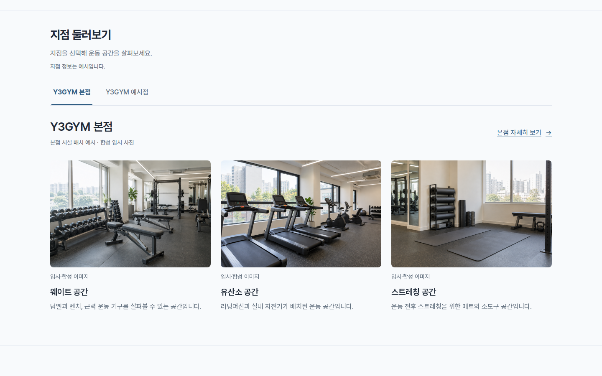
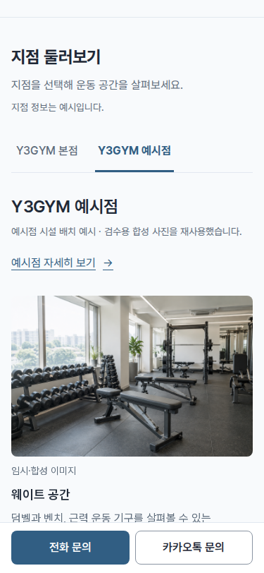
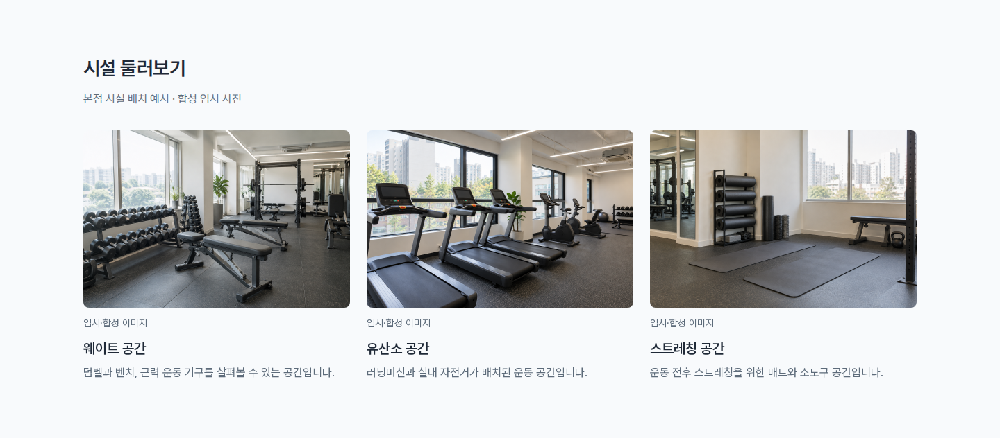
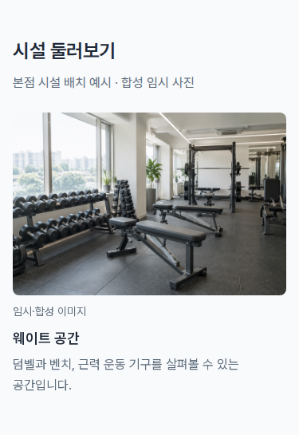

시설 자동 슬라이드
“시설슬라이드 통과”로 확인받은 구성과 동작을 요청대로 메인화면에도 동일하게 적용했습니다. 본점·예시점 선택과 상세 안내 링크는 유지합니다.
지점 안내의 사진 크기와 설명, PC 3장·태블릿 2장·모바일 1장 배치를 유지했습니다. 약 4.5초마다 한 칸씩 왼쪽으로 이동하고 마지막 사진 다음에는 첫 사진이 이어집니다.
홈과 지점 안내 모두 일시정지·이전·다음 버튼 없이 같은 자동 이동과 모바일 쓸어넘기기, 사진 영역의 키보드 좌우 탐색을 사용합니다. 마우스를 올리거나 키보드로 조작하면 자동 이동이 멈춥니다. 기기의 동작 줄이기 설정에서는 자동 재생을 끕니다.
메인화면 · 실제 자동 이동
메인화면 · PC와 모바일


실제 브라우저에서의 자동 이동
PC · 기존 3장 배치

모바일 · 한 장씩 표시

전체 화면: PC · 모바일. 6개 화면 폭과 자동 이동·반복·정지·지점 전환·스와이프·실패 상태 검수.


사진과 지점 정보는 임시 예시입니다. 목록 밀도와 지점 안내의 시설 슬라이드는 사용자 확인을 받았으며, 2026-10-10 후속 “ㅇㅋ 확인. 다음 진행하자”로 홈 적용 결과도 확인받았습니다. 위의 실제 화면·영상·캡처는 승인된 결과의 검토 자료입니다.